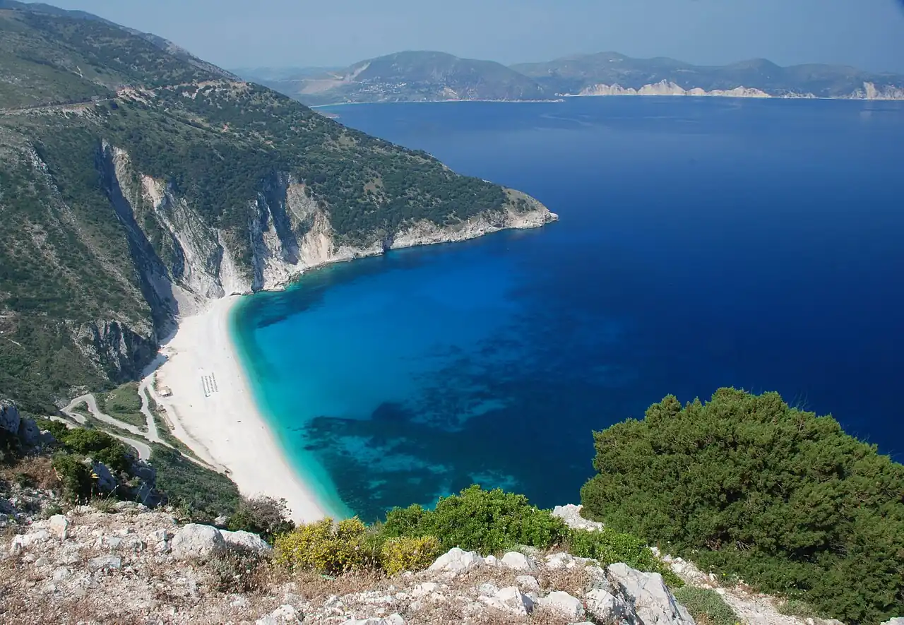

Myrtos
Céphalonie, Grèce · baignade

Plage de galets blancs au pied de falaises calcaires, sur la côte nord-ouest de Céphalonie. L’eau turquoise devient profonde très vite.
- Lieu
- Céphalonie, Grèce
- Niveau
- Intermédiaire
- Activités
- baignade
- Type d'eau
- Mer / océan
- Coordonnées
- 38.34, 20.54 (position approximative du secteur)
Dangers à connaître
- Fond qui plonge rapidement et vagues par vent d’ouest.
- Chutes de pierres possibles au pied des falaises.
Le conseil d'Ocean Buddy
Profite de la vue depuis la route en lacets avant de descendre, et prends des chaussons pour les galets.
Ouvrir dans Ocean Buddy Télécharger sur l'App Store
Source : Fiche Ocean Buddy · septembre 2026 · à vérifier localement.